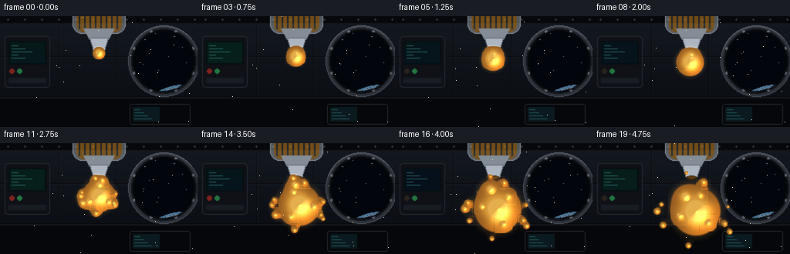
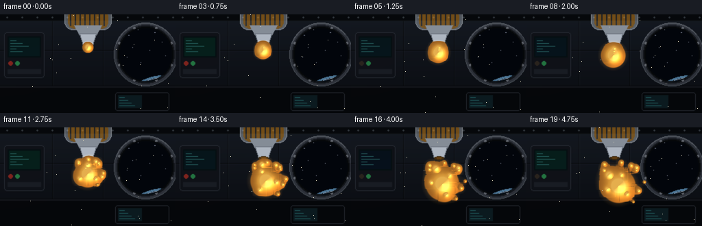
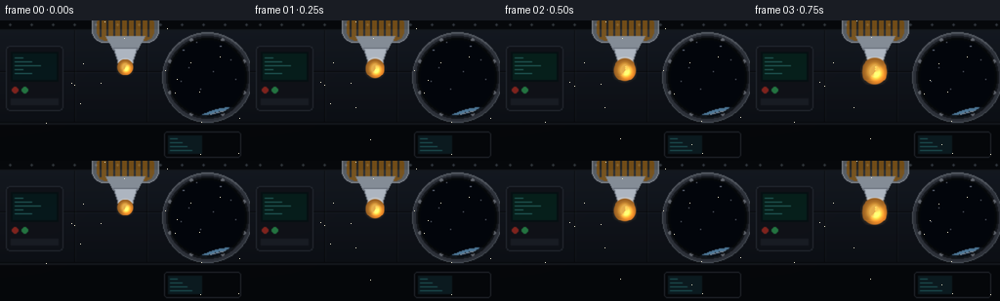

CODING AGENTS AS PIXEL WORLD MODELS
traex/Seed-2.1-Pro-0915 · phygen_004
点击播放 · 原生 RGB 像素
逐轮保存的候选
回放视频、检查图与代码变化。
每份候选均可单独播放。实际图片检查记录在下方工具轨迹中。
候选 01播放与检查图
点击播放 · 原生 RGB 像素

展开代码变化
--- 上一保存版本
+++ 本次保存版本
@@ -0,0 +1,318 @@
+"""Honey squeezed out in zero gravity inside a space station.
+
+Procedural text-to-video: 20 RGB frames, 256x144, 4 fps.
+The cabin / porthole / bottle are drawn with PIL; the honey is a
+supersampled analytic metaball field shaded in numpy.
+"""
+import math
+
+import numpy as np
+from PIL import Image, ImageDraw, ImageFilter
+
+import artifact_io
+
+W, H, N, FPS = 256, 144, 20, 4
+SS = 2 # supersampling factor for the liquid pass
+SW, SH = W * SS, H * SS
+
+rng = np.random.RandomState(7)
+
+# ---------------------------------------------------------------- background
+STARS = [
+ (188, 30, 1.0), (201, 22, 0.7), (226, 26, 0.9), (236, 40, 0.6),
+ (193, 48, 0.5), (218, 52, 0.8), (241, 60, 0.5), (205, 70, 0.6),
+ (185, 62, 0.4), (232, 18, 0.4),
+]
+
+
+def draw_background(i):
+ """Static-ish station cabin; i is the frame index for tiny light flicker."""
+ img = Image.new("RGB", (W, H))
+ px = img.load()
+ top = np.array([34, 42, 56])
+ bot = np.array([15, 19, 26])
+ for y in range(H):
+ f = y / (H - 1)
+ c = tuple((top * (1 - f) + bot * f).astype(np.uint8))
+ for x in range(W):
+ px[x, y] = c
+
+ d = ImageDraw.Draw(img, "RGBA")
+
+ # wall panel seams
+ for y in (52, 104):
+ d.line([(0, y), (W, y)], fill=(0, 0, 0, 130))
+ d.line([(0, y + 1), (W, y + 1)], fill=(120, 135, 155, 28))
+ for x in (76, 150):
+ d.line([(x, 10), (x, 103)], fill=(0, 0, 0, 110))
+ d.line([(x + 1, 10), (x + 1, 103)], fill=(120, 135, 155, 22))
+
+ # top utility duct with rivets
+ d.rectangle([0, 0, W, 9], fill=(10, 13, 18))
+ d.line([(0, 9), (W, 9)], fill=(150, 165, 185, 40))
+ for x in range(10, W, 22):
+ d.ellipse([x - 1, 3, x + 1, 5], fill=(90, 100, 112))
+
+ # lower console band
+ d.rectangle([0, 106, W, H], fill=(9, 12, 17))
+ d.line([(0, 106), (W, 106)], fill=(150, 165, 185, 45))
+ d.rounded_rectangle([168, 114, 246, 140], 3, outline=(90, 102, 118, 160))
+ d.rectangle([172, 118, 206, 136], fill=(18, 44, 52))
+ for k in range(4):
+ y = 121 + k * 4
+ d.line([(174, y), (174 + 7 + k * 5, y)], fill=(70, 210, 215, 150))
+
+ # left wall cabinet with a small screen
+ d.rounded_rectangle([6, 26, 64, 92], 4, fill=(24, 29, 39),
+ outline=(95, 106, 122, 140))
+ d.rectangle([11, 32, 59, 62], fill=(8, 26, 30))
+ flick = int(14 * math.sin(i * 0.7))
+ d.rectangle([13, 34, 57, 60], fill=(10, 40 + flick, 46))
+ for k in range(5):
+ y = 38 + k * 4
+ d.line([(15, y), (15 + 8 + (k % 3) * 9, y)],
+ fill=(90, 225, 220, 170))
+ led_r = 220 if (i // 5) % 2 == 0 else 70
+ d.ellipse([12, 68, 18, 74], fill=(led_r, 60, 50))
+ d.ellipse([22, 68, 28, 74], fill=(60, 200, 110))
+ d.rectangle([11, 80, 59, 86], fill=(40, 47, 60))
+
+ # ---- porthole (right) with space, stars and Earth limb
+ px0, py0, pr = 212, 58, 40
+ d.ellipse([px0 - pr - 6, py0 - pr - 6, px0 + pr + 6, py0 + pr + 6],
+ fill=(74, 82, 95), outline=(150, 160, 175, 180))
+ d.ellipse([px0 - pr - 2, py0 - pr - 2, px0 + pr + 2, py0 + pr + 2],
+ fill=(30, 35, 44))
+ win = Image.new("RGBA", (W, H), (0, 0, 0, 0))
+ wd = ImageDraw.Draw(win)
+ wd.ellipse([px0 - pr, py0 - pr, px0 + pr, py0 + pr], fill=(4, 9, 18, 255))
+ tw = 0.6 + 0.4 * math.sin(i * 1.3)
+ for sx, sy, b in STARS:
+ a = int(255 * b * (0.65 + 0.35 * tw))
+ wd.point((sx, sy), fill=(220, 230, 255, a))
+ if b > 0.85:
+ wd.point((sx - 1, sy), fill=(200, 215, 255, int(a * 0.5)))
+ # Earth limb
+ ex, ey, er = 238, 158, 66
+ wd.ellipse([ex - er, ey - er, ex + er, ey + er], fill=(20, 58, 104, 255))
+ wd.ellipse([ex - er - 3, ey - er - 3, ex + er + 3, ey + er + 3],
+ outline=(130, 200, 255, 200), width=3)
+ wd.ellipse([ex - er, ey - er, ex + er, ey + er],
+ outline=(210, 235, 255, 120), width=1)
+ wd.ellipse([ex - 34, ey - 30, ex - 8, ey - 8], fill=(46, 92, 70, 200))
+ wd.ellipse([ex - 4, ey - 40, ex + 20, ey - 18], fill=(52, 100, 74, 180))
+ mask = Image.new("L", (W, H), 0)
+ ImageDraw.Draw(mask).ellipse([px0 - pr, py0 - pr, px0 + pr, py0 + pr],
+ fill=255)
+ img.paste(win, (0, 0), mask)
+ # ring bolts + inner rim
+ for k in range(8):
+ a = k * math.pi / 4 + math.pi / 8
+ bx = px0 + math.cos(a) * (pr + 1)
+ by = py0 + math.sin(a) * (pr + 1)
+ d.ellipse([bx - 1.6, by - 1.6, bx + 1.6, by + 1.6],
+ fill=(165, 172, 185))
+ d.ellipse([px0 - pr, py0 - pr, px0 + pr, py0 + pr],
+ outline=(10, 12, 16, 220), width=2)
+ d.arc([px0 - pr - 6, py0 - pr - 6, px0 + pr + 6, py0 + pr + 6],
+ 200, 320, fill=(210, 220, 235, 90), width=2)
+
+ # soft key light from the upper left
+ glow = Image.new("L", (W, H), 0)
+ gd = ImageDraw.Draw(glow)
+ gd.ellipse([-90, -110, 150, 110], fill=70)
+ glow = glow.filter(ImageFilter.GaussianBlur(40))
+ warm = Image.new("RGB", (W, H), (46, 40, 30))
+ img = Image.composite(Image.blend(img, warm, 0.25), img,
+ glow.point(lambda v: int(v * 0.5)))
+
+ # vignette
+ vig = Image.new("L", (W, H), 0)
+ vd = ImageDraw.Draw(vig)
+ vd.ellipse([-60, -40, W + 60, H + 50], fill=150)
+ vig = vig.filter(ImageFilter.GaussianBlur(45))
+ dark = Image.new("RGB", (W, H), (0, 0, 0))
+ img = Image.composite(img, dark, vig)
+ return img
+
+
+def draw_bottle(base):
+ """Squeeze bottle + nozzle entering from the top edge."""
+ layer = Image.new("RGBA", (W, H), (0, 0, 0, 0))
+ d = ImageDraw.Draw(layer)
+ d.rounded_rectangle([94, -22, 162, 22], 12,
+ fill=(205, 215, 225, 95),
+ outline=(225, 232, 240, 150))
+ d.rounded_rectangle([99, -6, 157, 20], 9, fill=(216, 142, 34, 130))
+ for x in range(102, 156, 7):
+ d.line([(x, -16), (x, 16)], fill=(255, 255, 255, 26), width=2)
+ d.polygon([(108, 16), (148, 16), (140, 30), (116, 30)],
+ fill=(200, 210, 222, 160))
+ d.polygon([(116, 28), (140, 28), (135, 45), (121, 45)],
+ fill=(190, 198, 210, 230), outline=(120, 128, 140, 200))
+ d.ellipse([121, 42, 135, 47], fill=(52, 36, 14))
+ d.ellipse([123, 43, 133, 45], fill=(96, 60, 16))
+ base.alpha_composite(layer)
+ return base
+
+
+# ------------------------------------------------------------- honey metaballs
+GX, GY = np.meshgrid(
+ np.arange(SW, dtype=np.float32) / SS,
+ np.arange(SH, dtype=np.float32) / SS,
+)
+
+DEEP = np.array([122, 56, 6], dtype=np.float32)
+MID = np.array([206, 124, 22], dtype=np.float32)
+BRIGHT = np.array([255, 196, 84], dtype=np.float32)
+_ln = math.sqrt(0.38 ** 2 + 0.48 ** 2 + 0.79 ** 2)
+LX, LY, LZ = -0.38 / _ln, -0.48 / _ln, 0.79 / _ln
+_hn = math.sqrt(LX * LX + LY * LY + (LZ + 1.0) ** 2)
+HX, HY, HZ = LX / _hn, LY / _hn, (LZ + 1.0) / _hn
+BX, BY, BZ = 0.55, 0.5, 0.45 # soft bounce fill
+
+
+def render_honey(balls, bg):
+ """balls: list of (cx, cy, radius_native_px)."""
+ field = np.zeros((SH, SW), dtype=np.float32)
+ for cx, cy, r in balls:
+ reach = r * 2.6 + 1
+ x0 = max(0, int((cx - reach) * SS))
+ x1 = min(SW, int((cx + reach) * SS) + 1)
+ y0 = max(0, int((cy - reach) * SS))
+ y1 = min(SH, int((cy + reach) * SS) + 1)
+ if x1 <= x0 or y1 <= y0:
+ continue
+ xx = GX[y0:y1, x0:x1]
+ yy = GY[y0:y1, x0:x1]
+ d2 = (xx - cx) ** 2 + (yy - cy) ** 2
+ field[y0:y1, x0:x1] += (r * r) / (d2 + 0.35)
+
+ cover = np.clip((field - 0.82) / (1.02 - 0.82), 0, 1)
+ cover = cover * cover * (3 - 2 * cover)
+ halo = np.clip((field - 0.55) / (0.82 - 0.55), 0, 1) * (1 - cover)
+
+ # pseudo surface normal from the analytic field gradient
+ dFdy, dFdx = np.gradient(field)
+ gn = np.sqrt(dFdx * dFdx + dFdy * dFdy + 1e-6)
+ qx, qy = dFdx / gn, dFdy / gn
+ qq = np.clip(qx * qx + qy * qy, 0, 1)
+ nz = np.sqrt(1 - qq)
+ diff = np.maximum(qx * LX + qy * LY + nz * LZ, 0)
+ bounce = np.maximum(-qx * BX + -qy * BY + nz * BZ, 0) * 0.35
+ ndoth = np.clip(qx * HX + qy * HY + nz * HZ, 0, 1)
+ spec = ndoth ** 45
+ spec = spec * spec * (3 - 2 * spec)
+ rim = (1 - nz) ** 2 * 0.35
+
+ thick = np.clip((field - 1.0) / 5.0, 0, 1)
+ body = DEEP + (MID - DEEP) * np.clip(thick * 2.2, 0, 1)[..., None]
+ body = body + (BRIGHT - body) * (thick ** 1.4)[..., None]
+ shade = 0.55 + 0.5 * diff + bounce
+ col = body * shade[..., None]
+ col += rim[..., None] * np.array([255, 190, 90])
+ col += spec[..., None] * np.array([255, 248, 225]) * 0.95
+ col = np.clip(col, 0, 255)
+
+ big = np.array(bg, dtype=np.float32)
+ a = cover[..., None]
+ out = big * (1 - a) + col * a
+ out += halo[..., None] * np.array([255, 176, 70]) * 0.10
+ return np.clip(out, 0, 255).astype(np.uint8)
+
+
+# ----------------------------------------------------------------- animation
+TIP = (128.0, 45.0)
+
+N_DROPS = 9
+DROP_ANG = rng.uniform(0, 2 * math.pi, N_DROPS)
+DROP_R = rng.uniform(1.7, 3.1, N_DROPS)
+DROP_VEL = rng.uniform(0.45, 1.05, N_DROPS)
+DROP_TAN = rng.uniform(-0.35, 0.35, N_DROPS)
+
+
+def balls_for_frame(i):
+ balls = []
+
+ if i <= 9: # attached, swelling at the nozzle
+ u = i / 9.0
+ cx = 128 - 2 * u
+ cy = 49 + 12 * u
+ r = 3 + 14.5 * (1 - (1 - u) ** 2)
+ if i == 9: # neck pinches
+ r = 16.5
+ balls.append((cx, cy, r))
+ neck = 0.35 if i == 9 else 1.0
+ for k in (0.30, 0.58, 0.82):
+ nx = TIP[0] + (cx - TIP[0]) * k
+ ny = TIP[1] + (cy - TIP[1]) * k
+ nr = (2.2 + 3.4 * k) * neck
+ balls.append((nx, ny, nr))
+ else: # detached: drift into the cabin and keep spreading
+ u = (i - 10) / 9.0
+ e = 1 - (1 - u) ** 2
+ cx = 126 + 8 * e
+ cy = 61 + 26 * e + 2 * math.sin(u * math.pi)
+ r = 17 + 13.5 * e
+ wobble = 1 + 0.05 * math.sin((i - 9) * 1.15) * math.exp(-0.25 * (i - 10))
+ r *= wobble
+ cy += 1.2 * math.sin((i - 9) * 0.8)
+ balls.append((cx, cy, r))
+ # rotating surface lumps -> organic capillary wobble
+ for k, ph in enumerate((0.0, 2.1, 4.2)):
+ a = ph + (i - 10) * 0.55
+ lx = cx + math.cos(a) * r * 0.72
+ ly = cy + math.sin(a) * r * 0.72
+ balls.append((lx, ly, 3.4 + k * 0.4))
+ # slow satellite droplets spreading outward
+ dt = i - 9
+ for k in range(N_DROPS):
+ a = DROP_ANG[k]
+ dist = r * 0.95 + DROP_VEL[k] * dt * 2.2
+ tx, ty = -math.sin(a), math.cos(a)
+ dx = cx + math.cos(a) * dist + tx * DROP_TAN[k] * dt * 2.0
+ dy = cy + math.sin(a) * dist + ty * DROP_TAN[k] * dt * 2.0
+ dr = DROP_R[k] * (1 + 0.25 * math.sin(i * 1.7 + k))
+ balls.append((dx, dy, dr))
+ # a second smaller squeeze follows, drifting after the main blob
+ if i >= 12:
+ u2 = min(1, (i - 12) / 7)
+ sx = 128 - 8 * u2
+ sy = 47 + 22 * u2
+ sr = 2.4 + 5.5 * (1 - (1 - u2) ** 2)
+ balls.append((sx, sy, sr))
+ return balls
+
+
+DUST = rng.uniform(0, 1, (22, 3))
+
+
+def add_dust(img, i):
+ """Faint drifting motes catching the cabin light."""
+ d = ImageDraw.Draw(img, "RGBA")
+ for k, (bx, by, ph) in enumerate(DUST):
+ x = (bx * W + 3 * math.sin(i * 0.3 + ph * 6)) % W
+ y = (by * H + 2 * math.cos(i * 0.23 + ph * 6)) % H
+ a = int(40 + 30 * math.sin(i * 0.8 + k))
+ if a > 15:
+ d.point((x, y), fill=(220, 215, 190, a))
+ return img
+
+
+def main():
+ frames = []
+ for i in range(N):
+ bg = draw_bottle(draw_background(i).convert("RGBA"))
+ bg = bg.convert("RGB")
+ bg2 = bg.resize((SW, SH), Image.Resampling.BILINEAR)
+ honey = render_honey(balls_for_frame(i), bg2)
+ frame = Image.fromarray(honey).resize((W, H), Image.Resampling.LANCZOS)
+ frame = add_dust(frame.convert("RGBA"), i).convert("RGB")
+ frames.append(np.asarray(frame, dtype=np.uint8))
+ frames = np.stack(frames)
+ artifact_io.save(frames, ".")
+ print("saved", frames.shape)
+
+
+if __name__ == "__main__":
+ main()
候选 02播放与检查图
点击播放 · 原生 RGB 像素


展开代码变化
--- 上一保存版本
+++ 本次保存版本
@@ -225,9 +225,9 @@
TIP = (128.0, 45.0)
N_DROPS = 9
-DROP_ANG = rng.uniform(0, 2 * math.pi, N_DROPS)
+DROP_ANG = rng.uniform(-2.5, 0.9, N_DROPS)
DROP_R = rng.uniform(1.7, 3.1, N_DROPS)
-DROP_VEL = rng.uniform(0.45, 1.05, N_DROPS)
+DROP_VEL = rng.uniform(0.3, 0.8, N_DROPS)
DROP_TAN = rng.uniform(-0.35, 0.35, N_DROPS)
@@ -252,12 +252,17 @@
u = (i - 10) / 9.0
e = 1 - (1 - u) ** 2
cx = 126 + 8 * e
- cy = 61 + 26 * e + 2 * math.sin(u * math.pi)
- r = 17 + 13.5 * e
+ cy = 61 + 23 * e + 2 * math.sin(u * math.pi)
+ r = 17 + 7 * e
wobble = 1 + 0.05 * math.sin((i - 9) * 1.15) * math.exp(-0.25 * (i - 10))
r *= wobble
cy += 1.2 * math.sin((i - 9) * 0.8)
balls.append((cx, cy, r))
+ # pinch-off satellite left in the strand just after detachment
+ if i == 10:
+ balls += [(127.5, 52.5, 2.4), (126.5, 56.5, 1.7)]
+ elif i == 11:
+ balls += [(126.0, 55.0, 2.1), (124.5, 59.0, 1.6)]
# rotating surface lumps -> organic capillary wobble
for k, ph in enumerate((0.0, 2.1, 4.2)):
a = ph + (i - 10) * 0.55
@@ -268,7 +273,7 @@
dt = i - 9
for k in range(N_DROPS):
a = DROP_ANG[k]
- dist = r * 0.95 + DROP_VEL[k] * dt * 2.2
+ dist = r + 1.0 + DROP_VEL[k] * dt * 1.7
tx, ty = -math.sin(a), math.cos(a)
dx = cx + math.cos(a) * dist + tx * DROP_TAN[k] * dt * 2.0
dy = cy + math.sin(a) * dist + ty * DROP_TAN[k] * dt * 2.0
可观测工具轨迹
实际执行的命令与返回图片。
命令 1exit 0
/bin/bash -lc 'ls -la && cat prompt.txt && echo "---" && cat GENERATION_RULES.md && echo "---" && cat task_spec.json'
命令 2exit 0
/bin/bash -lc 'cat artifact_io.py && echo "---" && head -50 player_template.html'
命令 3exit 1
/bin/bash -lc 'cd . && python generate.py && ls -la'
命令 4exit 0
/bin/bash -lc 'cd . && python generate.py && ls -la'
命令 5exit 0
/bin/bash -lc "cd . && python - <<'EOF'
import numpy as np
from PIL import Image
def ascii_preview(arr, w=64, h=24):
img = Image.fromarray(arr).resize((w,h))
a = np.asarray(img).astype(float)
lum = a.mean(2)
# honey mask: high R, moderate G, low B
honey = (a[...,0]>150)&(a[...,1]>70)&(a[...,1]<210)&(a[...,2]<90)
chars = \" .:-=+*#%@\"
out=[]
for y in range(h):
row=\"\"
for x in range(w):
if honey[y,x]:
row += \"\\033[33mH\\033[0m\"
else:
row += chars[min(9,int(lum[y,x]/256*10))]
out.append(row)
return \"\\n\".join(out)
frames = np.stack([np.asarray(Image.open(f\"frames/{i:02d}.png\")) for i in range(20)])
for fi in (0,9,10,19):
print(f\"--- frame {fi} ---\")
print(ascii_preview(frames[fi]))
# honey pixel count over time
a = frames.astype(int)
honey = (a[...,0]>150)&(a[...,1]>70)&(a[...,1]<210)&(a[...,2]<100)
print(\"honey counts:\", honey.reshape(20,-1).sum(1).tolist())
# motion
d = np.abs(frames[1:].astype(int)-frames[:-1].astype(int)).mean((1,2,3))
print(\"mean frame delta:\", [round(x,2) for x in d])
EOF"命令 6exit 0
/bin/bash -lc 'cd . && mkdir -p .tmp && cp pixels.npz .tmp/candidate_v1.npz && cp inspection.png .tmp/candidate_v1_inspection.png'
命令 7exit 0
/bin/bash -lc "cd . && python generate.py && python - <<'EOF'
import numpy as np
from PIL import Image
frames = np.stack([np.asarray(Image.open(f\"frames/{i:02d}.png\")) for i in range(20)])
a = frames.astype(int)
honey = (a[...,0]>150)&(a[...,1]>70)&(a[...,1]<210)&(a[...,2]<100)
print(\"honey counts:\", honey.reshape(20,-1).sum(1).tolist())
ys, xs = np.where(honey[19])
print(\"frame19 bbox x:\", xs.min(), xs.max(), \"y:\", ys.min(), ys.max())
ys, xs = np.where(honey[14])
print(\"frame14 bbox x:\", xs.min(), xs.max(), \"y:\", ys.min(), ys.max())
d = np.abs(frames[1:].astype(int)-frames[:-1].astype(int)).mean((1,2,3))
print(\"delta 9->11:\", round(d[9],2), round(d[10],2))
EOF"命令 8exit 0
/bin/bash -lc "cd . && python - <<'EOF'
import numpy as np
from PIL import Image
def preview(arr,w=72,h=27):
img=Image.fromarray(arr).resize((w,h)); a=np.asarray(img).astype(float)
lum=a.mean(2); honey=(a[...,0]>150)&(a[...,1]>70)&(a[...,1]<210)&(a[...,2]<100)
chars=\" .:-=+*#%@\"
for y in range(h):
print(\"\".join(\"\\033[33mH\\033[0m\" if honey[y,x] else chars[min(9,int(lum[y,x]/256*10))] for x in range(w)))
f=np.asarray(Image.open(\"frames/19.png\")); preview(f)
EOF"命令 9exit 0
/bin/bash -lc "cd . && python - <<'EOF'
import numpy as np
from PIL import Image
def preview(arr,w=64,h=22):
img=Image.fromarray(arr).resize((w,h)); a=np.asarray(img).astype(float)
lum=a.mean(2); honey=(a[...,0]>150)&(a[...,1]>70)&(a[...,1]<210)&(a[...,2]<100)
chars=\" .:-=+*#%@\"
return [\"\".join(\"\\033[33mH\\033[0m\" if honey[y,x] else chars[min(9,int(lum[y,x]/256*10))] for x in range(w)) for y in range(h)]
for fi in (0,5,9,10,11,14):
print(f\"--- {fi} ---\")
f=np.asarray(Image.open(f\"frames/{fi:02d}.png\"))
for row in preview(f)[4:18]: print(row)
EOF"保存候选 2 份；完成命令 9 次；可验证图片返回 0 张。原始 API 响应与完整日志保留在本地。